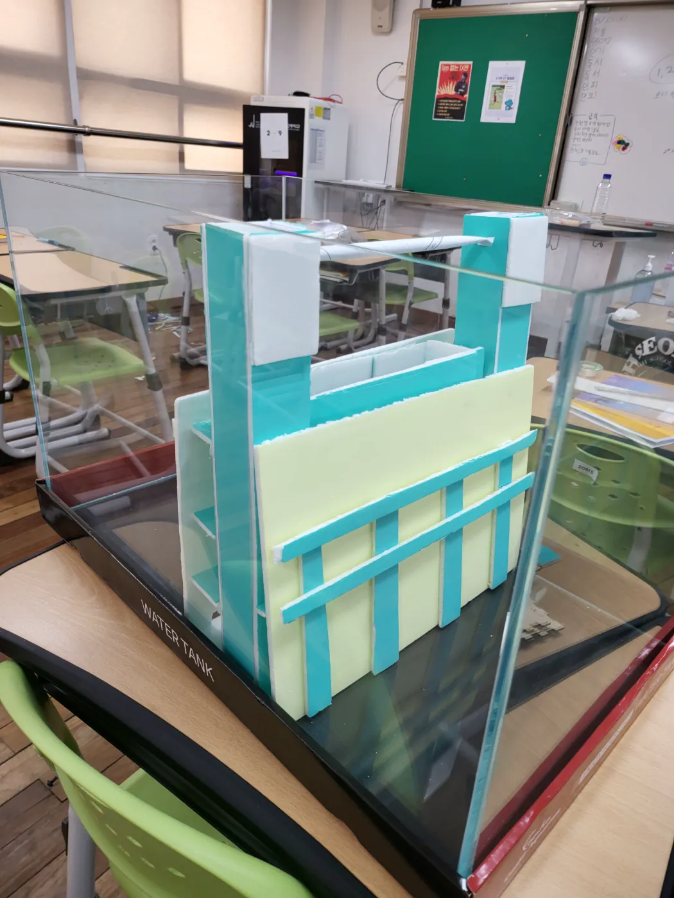
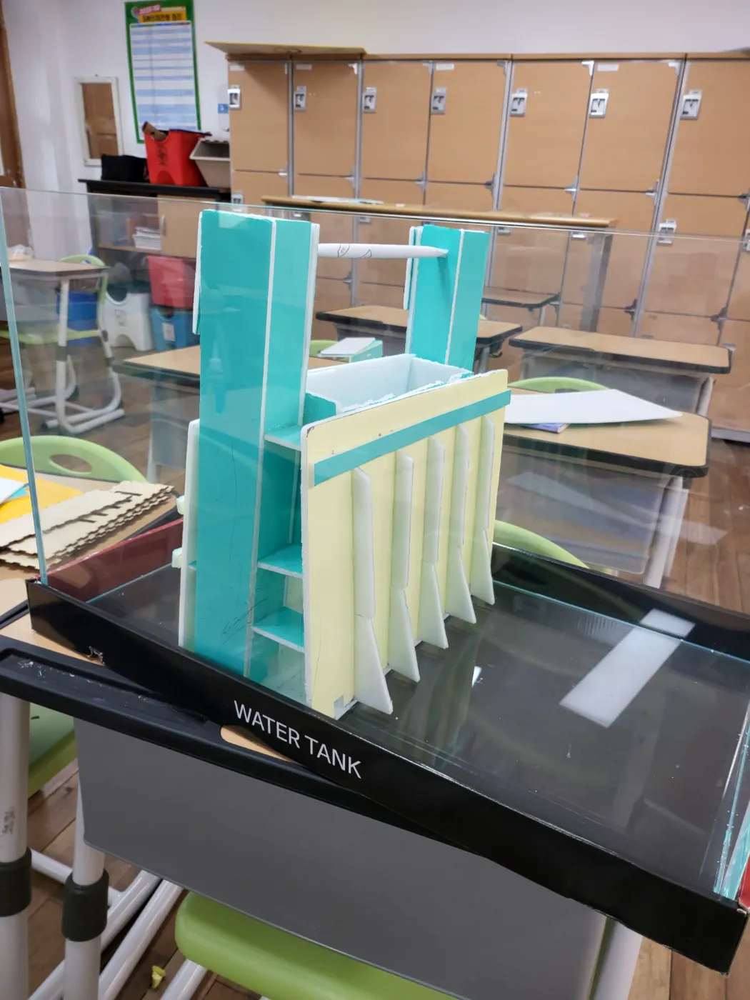

프로젝트 개요
2024 지속 가능한 발전 프로젝트로, 기후 위기로 인한 해수면 상승에 대비한 해안 장벽 MVP입니다. 수조 안에 가상의 도시와 바다를 만들고, 이를 분리하는 장벽을 설계하여 해수면 상승 시나리오를 시뮬레이션하는 프로젝트입니다.
주요 기능 / 내용
- 해수면 상승 시나리오 시뮬레이션 및 분석
- 다층 방파 구조 설계
- 레이저 커터로 프로토타입 모형 제작
- 지속 가능한 발전 목표(SDGs) 적용
프로젝트 사진





시제품 동작 영상
직접 체험 데모
나의 역할
팀원 (아두이노 개발 총괄) · 4인 팀
- 서브 기획
- 아두이노 프로그래밍
- 아두이노 배선
- 장벽 방수 처리
- 물자 파밍 및 조달
- 간식 지원
- 발표
- QA & 디버깅
- 그 외 다수